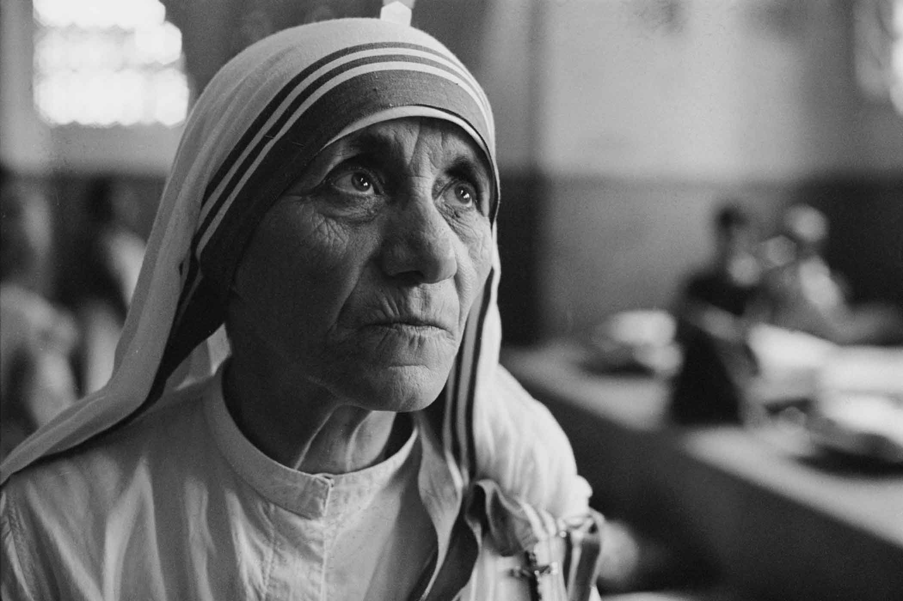

CHI ERA?
Madre Teresa di Calcutta (1910-1997) è stata una religiosa albanese, fondatrice delle Missionarie della Carità, dedita ai "più poveri tra i poveri" a Calcutta. Premio Nobel per la Pace nel 1979, ha dedicato la vita ai malati, abbandonati e indigenti, diventando un'icona mondiale di carità e venendo proclamata santa nel 2016.
